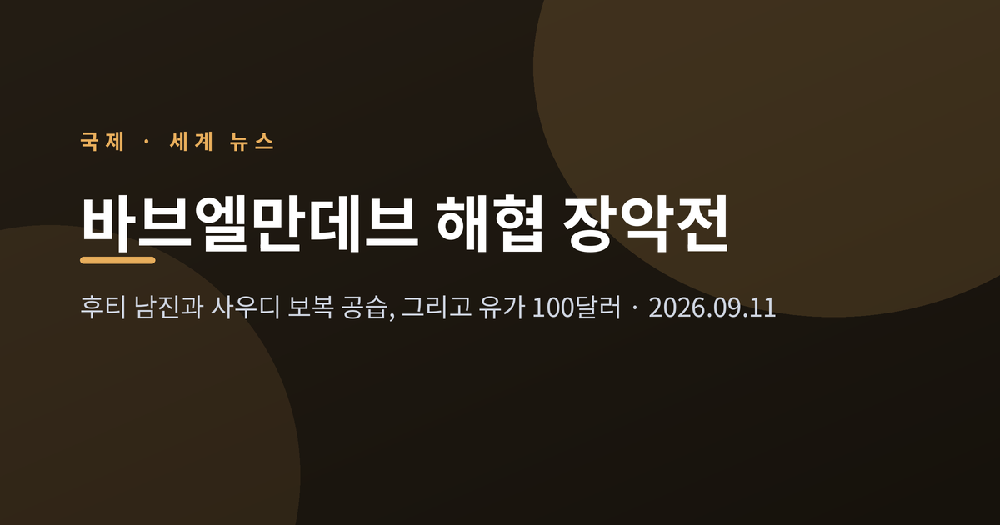
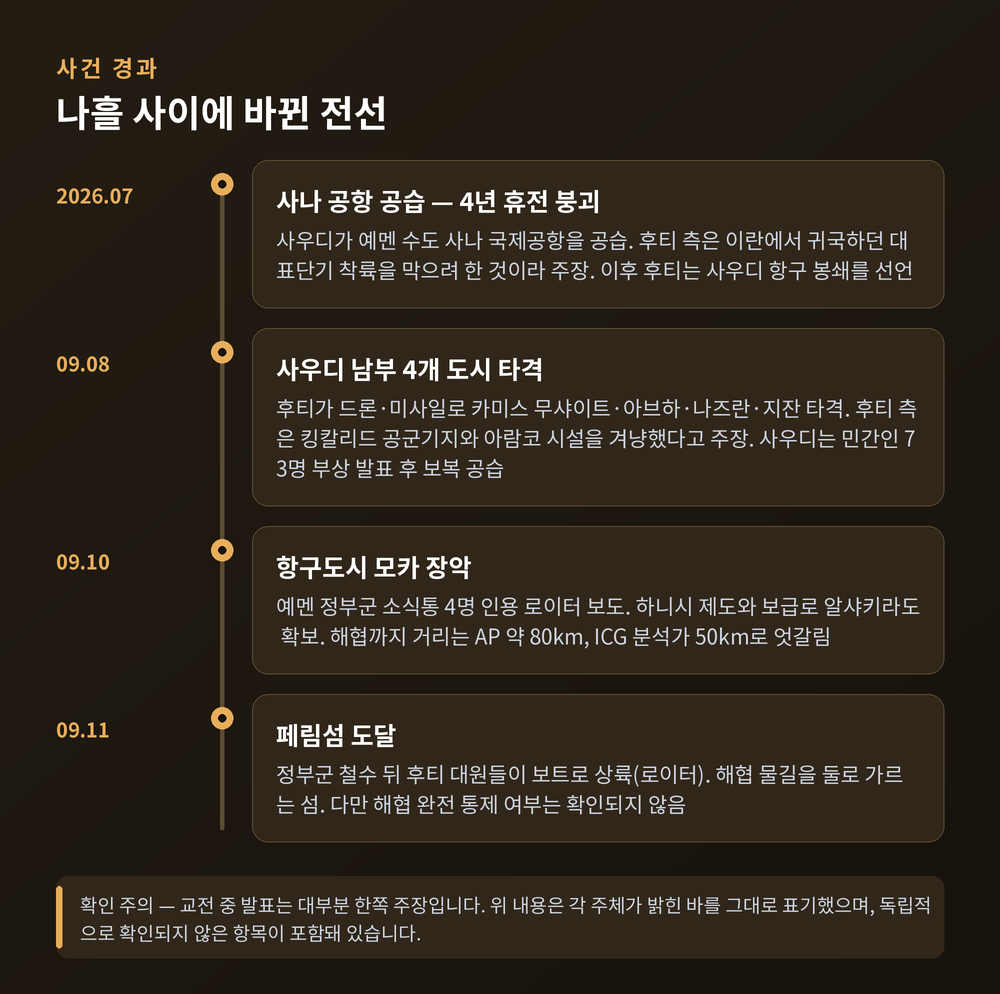
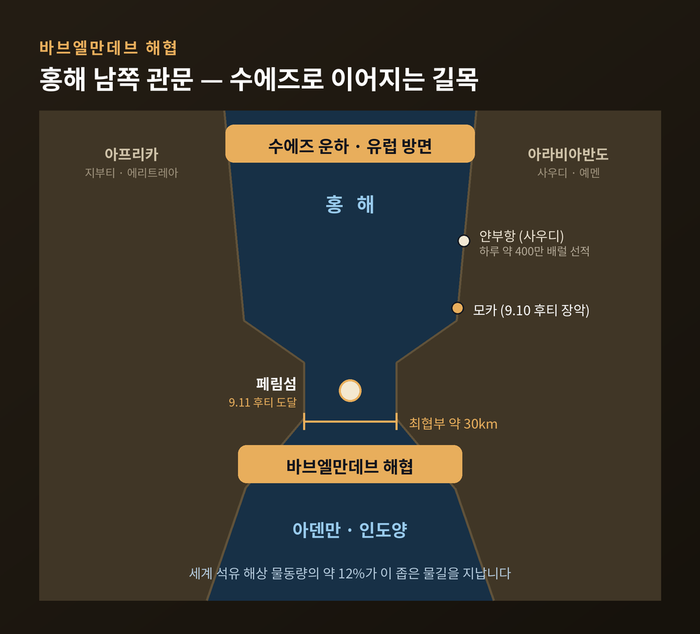
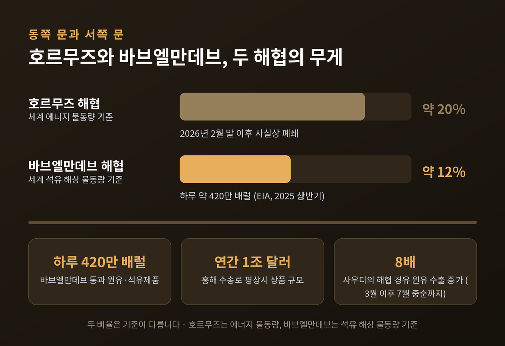
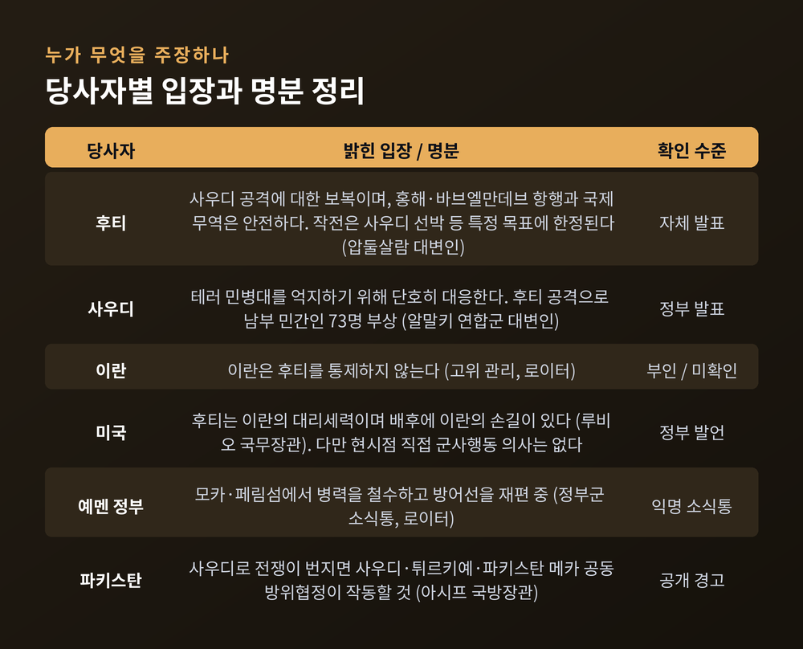
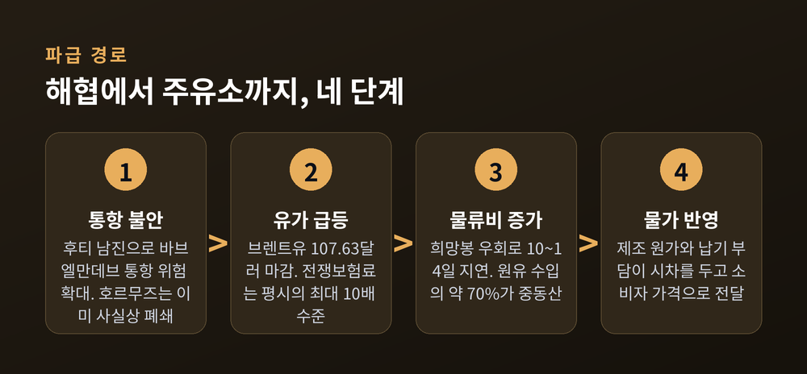

세 줄 요약
이번 글에서는 2026년 9월 바브엘만데브 해협을 둘러싼 충돌을 차례로 정리해 보겠습니다.
사건의 경과와 지정학적 의미, 그리고 한국 경제에 닿는 지점까지 살펴보겠습니다.
시작은 지난 7월이었습니다.
사우디아라비아가 예멘 수도 사나의 국제공항을 공습하면서 4년 가까이 이어지던 사실상의 휴전이 깨졌습니다.
후티 측은 이 공습이 이란에서 돌아오던 자기 대표단 탑승기의 착륙을 막으려는 것이었다고 주장했습니다.
이후 후티는 사우디 항구 봉쇄를 선언했고, 홍해를 지나는 사우디 선박을 공격하기 시작했습니다.
충돌이 본격적으로 커진 시점은 9월 8일입니다.
후티는 드론과 미사일을 동원해 사우디 남부의 카미스 무샤이트, 아브하, 나즈란, 지잔 네 도시를 타격했습니다.
후티 측은 아브하 국제공항과 카미스 무샤이트의 킹칼리드 공군기지, 아브하·지잔의 아람코 시설을 겨냥해
탄도미사일 수십 발을 쐈다고 밝혔습니다. 다만 이는 후티 측 발표이며, 실제 피해 규모는 사우디 정부가 확인해 주지 않았습니다.
미 항공우주국(NASA) 위성사진에 지잔 정유소와 아브하 석유 분배 센터에서 검은 연기가 오르는 모습이 잡힌 정도가
현재까지 공개된 제3자 정황입니다.
사우디 당국은 이 공격으로 여성과 어린이를 포함해 최소 73명이 다쳤다고 발표했습니다.
사우디 주도 연합군 대변인 투르키 알말키는 단호히 대응하겠다고 밝혔고,
사우디 전투기는 후티가 장악한 사나 동부 주바와 서남부 타이즈 지역을 곧바로 공습했습니다.
후티 측은 사우디가 타이즈·호데이다·마리브·알자우프에서 64차례 공습을 퍼부었다고 주장했습니다.
이 역시 후티 측 집계이며 독립적으로 확인되지는 않았습니다.

그리고 9월 10일, 지도가 움직였습니다.
로이터는 예멘 정부군 소식통 네 명을 인용해 후티가 홍해 연안 항구도시 모카를 장악했다고 전했습니다.
소식통 두 명은 후티가 홍해의 하니시 제도까지 도달했다고 밝혔습니다.
AP는 후티가 타이즈와 서부 해안을 잇는 보급로인 알샤키라 지역도 확보했다고 보도했습니다.
해협까지의 거리는 매체마다 다릅니다. AP는 모카가 해협에서 약 80킬로미터 떨어져 있다고 했고,
국제위기그룹의 예멘 분석가 아흐메드 나기는 후티 전선이 해협에서 50킬로미터까지 접근했다고 파이낸셜타임스에 말했습니다.
하루 뒤인 9월 11일에는 페림섬 소식이 나왔습니다.
로이터에 따르면 예멘 정부군이 섬에서 철수한 뒤 후티 대원들이 보트로 상륙했습니다.
페림섬은 해협 한가운데에서 물길을 둘로 가르는 작은 섬입니다. 위치만으로 무게가 다릅니다.
다만 여기서 한 가지는 짚고 넘어가야 합니다.
로이터는 '도달(reach)'이라는 표현을 썼습니다. 일부 매체가 전한 '해협 완전 통제'는 아직 확인된 사실이 아닙니다.
바브엘만데브는 아랍어로 '눈물의 문'이라는 뜻입니다.
홍해와 인도양을 잇는 남쪽 관문이고, 아라비아반도와 아프리카 사이에 놓여 있습니다.
가장 좁은 곳의 폭이 30킬로미터 안팎에 불과합니다.
이 문을 지나 북쪽으로 올라가면 수에즈 운하가 나오고, 그다음이 지중해와 유럽입니다.
아시아와 유럽을 잇는 최단 항로의 입구가 바로 이곳입니다.
숫자로 보면 더 분명합니다.
미국 에너지정보청(EIA)은 2025년 상반기 이 해협을 지난 원유와 석유제품을 하루 약 420만 배럴로 집계했습니다.
세계 석유 해상 물동량의 약 12%에 해당합니다. 전체 해상 교역 기준으로는 약 10%가 이 좁은 물길을 통과합니다.
AP는 홍해 수송로를 통해 평상시 연간 약 1조 달러 규모의 상품이 오간다고 전했습니다.

여기서 그치지 않습니다. 이번 사태가 유독 무겁게 받아들여지는 이유는 따로 있습니다.
예전에는 중동 원유의 길이 하나 막혀도 다른 하나가 남아 있었습니다. 지금은 그렇지 않습니다.
올해 2월 말 미국과 이란의 충돌 이후 이란이 호르무즈 해협을 사실상 닫았습니다.
세계 에너지 물동량의 약 20%가 지나는 통로입니다.
사우디는 이를 피해 동서를 가로지르는 송유관으로 원유를 홍해 연안 얀부항까지 보내 실어 냈습니다.
얀부항의 에너지 수출 물동량은 하루 평균 약 400만 배럴로, 1년 전 97만여 배럴의 네 배를 넘어섰습니다.
AFP 집계로는 사우디의 바브엘만데브 경유 원유 수출이 3월부터 7월 중순까지 여덟 배로 늘었습니다.
즉 사우디는 호르무즈를 피해 바브엘만데브로 옮겨 탔는데, 그 새 통로마저 위협받는 상황이 된 셈입니다.
아라비아반도의 동쪽 문과 서쪽 문이 동시에 흔들린다는 우려는 여기서 나옵니다.

반응은 즉각적이었습니다.
9월 10일 국제유가는 6% 넘게 뛰었습니다.
10월 인도분 서부텍사스산원유(WTI)는 전장 대비 6.43달러(6.69%) 오른 배럴당 102.48달러에 마감했습니다.
브렌트유 11월물은 6.42달러(6.34%) 상승한 107.63달러로 장을 마쳤습니다. 둘 다 100달러 선을 넘겼습니다.
해운 쪽은 이미 오래 아팠습니다.
홍해 사태가 길어지면서 전 세계 평균 해상 운임은 위기 전보다 141% 올랐습니다.
희망봉 우회 타격이 가장 큰 상하이–로테르담, 상하이–제노바 노선은 2023년 말 대비 평균 230% 이상 뛰었습니다.
중동에서 중국으로 향하는 유조선 하루 운임은 약 80만 달러로 사상 최고치를 기록했습니다.
보험료는 더 가파릅니다.
호르무즈 인근에 묶인 선사들이 감당하는 전쟁보험료는 평시의 최대 열 배 수준까지 올랐습니다.
중동 충돌 이후 상승률이 최소 200%, 많게는 1,000%에 달한다는 집계도 나왔습니다.
머스크와 MSC 같은 대형 선사들은 수에즈 진입을 포기하고 희망봉으로 우회하고 있습니다.
이 경로는 항해 거리를 약 6,500킬로미터 늘리고, 운항 일정을 10~14일 지연시킵니다.
연료비가 불어나고 선박 회전이 느려지면 컨테이너 부족으로 번집니다.
예멘 내전의 뿌리는 2014년입니다.
이란의 지원을 받는 후티가 수도 사나를 장악했고, 이듬해 사우디가 개입해 국제사회가 인정하는 예멘 정부를 지원했습니다.
그 뒤로 이 전쟁은 사우디와 이란의 대리전 성격을 함께 갖게 됐습니다.
2022년 4월 유엔 중재로 두 달짜리 휴전이 성립됐고, 두 차례 연장돼 그해 10월까지 이어졌습니다.
휴전은 공식 만료됐지만 대규모 전투가 멎으면서 약 4년간 유예 상태가 유지됐습니다.
이번 9월 공세를 두고 여러 매체가 "2022년 휴전 이후 후티의 최대 영토 확장"이라고 평가하는 배경입니다.
다만 이 구도를 종파 대립만으로 읽는 것은 정확하지 않습니다.
예멘 내부의 지역·부족·권력 갈등이 겹겹이 얽혀 있고, 어느 한쪽을 단일한 집단으로 묶어 판단하기도 어렵습니다.
가장 크게 갈리는 쟁점은 이란의 개입 여부입니다.
마코 루비오 미국 국무장관은 "후티는 여러 면에서 이란의 대리세력"이며 이번 움직임 일부의 배후에
이란의 손길이 있다고 말했습니다. 로이터가 인용한 이란 소식통 두 명은 이란이 후티에 사우디 공격을 요구하며
자금과 무기를 약속했고, 이슬람혁명수비대 지휘관들이 현지에서 조율을 도왔다고 전했습니다.
반면 로이터가 접촉한 이란 고위 관리는 파키스탄이 사우디의 경고를 전달하자 "이란은 후티를 통제하지 않는다"고 답했습니다.
양쪽 주장이 정면으로 맞서 있고, 어느 쪽도 공개된 증거로 확정되지 않았습니다.
후티 측 설명도 따로 있습니다.
후티 대변인 겸 협상단장 모하메드 압둘살람은 홍해와 바브엘만데브의 항행과 국제 무역은 안전하며
군사작전은 특정 목표에 한정된다고 밝혔습니다.
후티 산하 인도주의작전조정센터도 기존 운항 금지 대상인 사우디 선박을 제외하면 다른 해운사의 항행은 안전하다고 했습니다.
사우디 선박만 겨냥한 제한적 조치라는 취지입니다.
시장은 이 설명을 그대로 받아들이지 않고 있습니다. 운임과 보험료가 그 답을 보여 줍니다.

인명 피해 집계도 기관마다 다릅니다.
세계보건기구를 인용한 알자지라 보도로는 최근 교전으로 1,000명 넘게 숨지거나 다쳤고 수만 명이 피란했습니다.
미들이스트아이는 홍해 연안 인근 수일간 교전에서 300명 이상이 숨졌다고 전했습니다.
집계 기준과 시점이 달라 단일 수치로 말하기는 어렵습니다.
AP는 모카 병원에서 빠져나온 의사 세 명을 인용해 주민들이 남부 아덴으로 피란하고 있다고 보도했습니다.
이 사안이 먼 바다의 일로만 끝나지 않는 이유가 있습니다.
한국은 원유 수입의 약 70%를 중동에 의존합니다. 그 물량 대부분이 호르무즈를 지나옵니다.
호르무즈가 이미 막힌 상태에서 바브엘만데브까지 흔들리면, 중동산 원유 의존도가 높은 동아시아가 먼저 부담을 안습니다.
파이낸셜뉴스와 아주경제 등 국내 매체가 한국과 일본을 지목해 온 이유입니다.
비용은 계단식으로 붙습니다.
유가가 배럴당 80달러에서 100달러로 오르면 연간 약 10조 원, 100달러에서 120달러로 가면
연간 20조 원대 추가 부담이 생긴다는 분석이 있습니다. 어디까지나 추정치입니다.
참고할 만한 앞선 사례도 있습니다.
올해 호르무즈 국면에서는 두바이유가 배럴당 157달러대까지 치솟고, 원·달러 환율이 1,500원을 넘었으며,
코스피가 하루 7% 넘게 빠졌습니다. 제조업 원가는 최대 5% 이상 오른 것으로 분석됐습니다.
다만 이 수치는 호르무즈 국면의 기록이지 이번 바브엘만데브 국면의 실측치가 아닙니다. 구분해서 볼 필요가 있습니다.
수출 물류도 직접 영향권입니다.
유럽으로 가는 화물이 수에즈 대신 희망봉을 돌면 리드타임이 10일 이상 늘고 운임이 함께 오릅니다.
납기가 밀리고 물류비가 오르면 결국 소비자 가격에 반영됩니다.
정부는 대응에 들어갔습니다.
산업통상자원부는 중동 전쟁 실물경제 긴급 점검회의를 열고 수급 상황을 점검했습니다.
8~9월 도입분은 전년 평균 이상 물량이 확보됐고 10월분도 순차 도입 중이라 단기 차질은 없다는 판단입니다.
수에즈 운하와 이집트 수메드 송유관 같은 우회 경로를 정유업계와 협의하고 있고,
필요하면 비축유 스와프를 즉시 재개한 뒤 여수·거제 등 9개 비축기지의 물량을 풀겠다는 계획입니다.
액화천연가스(LNG)는 전체의 80% 이상을 비중동 지역에서 들여오고 있어 상대적으로 여유가 있습니다.

세 갈래를 지켜볼 만합니다.
첫째는 페림섬의 실제 상태입니다.
'도달'과 '완전 통제'는 다른 말입니다. 후티가 섬에 보급과 화력을 안정적으로 올려놓을 수 있느냐가 관건입니다.
둘째는 외부 개입의 폭입니다.
미국은 현재 선을 그어 둔 상태입니다. 트럼프 대통령은 직접적인 군사 행동 요청을 거부했고,
당국자들도 지금으로서는 후티를 상대로 직접 군사행동에 나설 뜻이 없다고 밝혔습니다.
반면 카와자 아시프 파키스탄 국방장관은 사우디 영토로 전쟁이 번지면
지난달 체결된 사우디·튀르키예·파키스탄의 메카 공동방위협정이 작동하게 될 것이라고 경고했습니다.
예멘 내전이 예멘 바깥으로 넓어질 통로가 하나 더 열려 있는 셈입니다.
셋째는 협상 가능성입니다.
2022년에도 결국 유엔 중재가 전선을 멈춰 세웠습니다. 다만 그때와 지금은 조건이 다릅니다.
후티가 확보한 지형이 훨씬 넓고, 사우디 본토가 직접 타격받았으며, 호르무즈 변수까지 겹쳐 있습니다.
솔직히 어느 쪽으로 기울지는 아직 알 수 없습니다.
확실한 것은 해협 하나의 통항 여부가 며칠 만에 유가를 두 자릿수 퍼센트로 움직였다는 사실뿐입니다.
정리하면 이렇습니다.
바브엘만데브는 지도에서 손톱만 한 물길입니다.
그런데 그 폭 30킬로미터가 세계 석유의 10분의 1과 아시아–유럽 항로의 입구를 쥐고 있습니다.
호르무즈가 닫힌 뒤 사우디가 급히 옮겨 온 우회로이기도 합니다.
이 사안을 볼 때 한 가지만 지키면 좋겠습니다.
교전 중 나오는 발표는 대부분 한쪽의 말입니다. 누가 한 주장인지를 먼저 확인하고 읽는 편이 안전합니다.
해협은 좁을수록 세계를 크게 흔듭니다.
며칠 뒤 주유소 가격표가 달라져 있다면, 그 원인의 일부는 이 좁은 물길에 있을 것입니다.